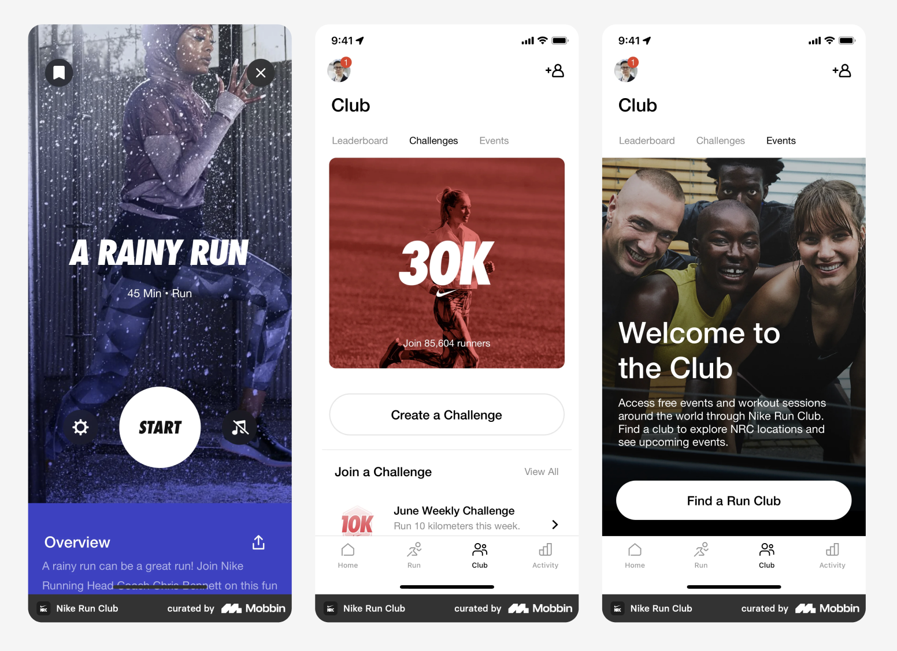

1. Goals and Planning
Let's dive into two important concepts in behavioural science: goals and planning. These concepts play a significant role in helping us achieve what we want in life. Goals are essentially what we strive to accomplish, while planning is the process of figuring out how we can actually reach those goals.
When it comes to goals, they can be both short-term and long-term. For instance, a short-term goal might be something like "I will eat a healthy breakfast tomorrow," while a long-term goal could be "I will save Rs 10,000 for a down payment on a house." Setting goals gives us something to work towards and helps us stay motivated even when faced with challenges.
Now, planning is all about breaking down our goals into actionable steps. It involves identifying the necessary tasks, setting deadlines, and developing strategies to overcome any obstacles that might come our way. Effective planning allows us to make the most of our time and resources, helping us avoid mistakes and stay on track.
Speaking of goals and planning, let's explore how these concepts are applied in two popular apps: Todoist and Mint.
First up, let's talk about Todoist, a fantastic task management app. Todoist integrates the goals and planning behaviour change techniques to help users organise their tasks, set goals, and plan their activities. With its user-friendly interface, the app allows individuals to create and manage to-do lists, prioritise tasks, and track their progress.
When it comes to goal setting, Todoist enables users to set specific goals and objectives for their tasks. You can assign due dates, establish priorities, and even categorise tasks based on different projects or areas of focus. This goal-setting feature helps you define your intentions, bring clarity to your tasks, and stay focused on your priorities.
Task breakdown and planning is another powerful feature of Todoist. It allows you to break down larger goals or projects into smaller, actionable tasks. By dividing tasks into manageable steps, you can effectively plan your activities, allocate time and resources, and steadily make progress towards your goals. This approach promotes a sense of achievement and keeps you motivated throughout the process.
Moreover, Todoist provides visual indicators like task completion percentages or progress bars to help you monitor your progress. These visual cues give you a clear picture of how much you have accomplished and how far you still have to go, providing a sense of direction and motivation.
Now let's shift our focus to Mint, a popular personal finance app that demonstrates the effective application of goals and planning behaviour change techniques in managing finances.
With Mint, you can set specific financial goals tailored to your needs. Whether you want to save for a vacation, pay off debt, or build an emergency fund, Mint allows you to define your target amounts, set timelines, and track your progress. This goal-setting feature provides you with a clear target, encouraging disciplined financial behaviour.
Budgeting and planning are essential aspects of financial management, and Mint has got you covered in that department. The app provides tools for creating budgets, allowing you to categorise your expenses, set spending limits, and receive notifications when you approach or exceed your budget. By helping you plan and allocate your financial resources effectively, Mint supports behaviour change towards responsible spending habits.
To keep you on track, Mint offers visual representations of your financial health. You'll find informative charts and graphs displaying your spending patterns, savings progress, and even debt reduction. This visual feedback enables you to monitor your progress, identify areas for improvement, and make informed financial decisions.
So there you have it! The application of goals and planning behaviour change techniques in apps like Todoist and Mint can truly transform the way we approach our tasks and manage our finances. These apps provide practical features that empower us to set goals, break them down into actionable steps, track our progress, and ultimately achieve the outcomes we desire.
2. Feedback and Monitoring
Have you ever wondered how feedback and monitoring can influence our behavior? These two techniques are actually quite powerful when it comes to shaping our actions. Feedback is all about receiving information about the results of our behavior, while monitoring involves keeping track of our behavior over time.
Let's take feedback first. It's like getting valuable insights into what's working and what's not. For example, think about a fitness app that tells you how many steps you've taken each day. That feedback can be incredibly useful in helping you track your progress and identify areas where you need to step up your activity level (pun intended!).
Now, monitoring is all about keeping an eye on our behavior over time. It helps us spot patterns and make necessary changes. Take a social media app, for instance. If it tracks the amount of time you spend on the app each day, you'll have a clear picture of your usage habits. Armed with this information, you can better manage your time and ensure you're not spending too much of it scrolling mindlessly.
But here's the real magic: when feedback and monitoring work hand in hand, they become a powerful tool for influencing behavior. By providing feedback and tracking behavior over time, designers can create products that help users improve their behavior in meaningful ways.
Let's look at how this comes to life in two popular apps: Apple health and Bumble.

Apple health is a mobile app that takes full advantage of feedback and monitoring features to support behavior change and promote a healthy lifestyle. With its device tracking metrics like steps, distance, calories, and sleep patterns, Apple health provides personalized feedback through its mobile app. Users get valuable insights and progress updates based on their activity data, helping them stay motivated and track their journey towards fitness goals.
Now, shifting gears to Bumble, a popular dating and networking app. Here, the Feedback & Monitoring BCT is cleverly applied to enhance user engagement and provide users with valuable feedback on their interactions. Bumble incorporates features like profile completion meters and message read receipts.
The profile completion meter acts as a feedback mechanism, showing users the percentage of their profile completeness. It's like a gentle nudge, reminding users to fill out all the necessary information, such as bios, photos, and interests. This feedback helps users increase their chances of finding meaningful connections by ensuring they have a complete and appealing profile.
Next up, message read receipts. Bumble uses this feature to provide users with feedback on the status of their sent messages. When a message is delivered and read by the recipient, the sender receives a notification or indicator confirming that the message has been seen. This feedback is a game-changer, as it allows users to gauge the engagement and interest of their matches and adds transparency to the communication process.
So, you see, feedback and monitoring can truly transform the way we behave and engage with apps like Apple health and Bumble. They empower us to make informed decisions, stay motivated, and achieve our desired outcomes.
3. Social Support
When it comes to behavior change, social support is a game-changer. It taps into the power of connection and community to boost motivation, accountability, and resilience. Think of it as having your own cheerleading squad in your corner, pushing you towards your goals.
So, what exactly is social support? It's all about receiving assistance, encouragement, and resources from your social networks. These networks can be your friends, family, peers, or even online communities. Social support comes in different forms, like emotional support, instrumental support, and informational support, and each of them can have a significant impact on your behavior.
Now, let's explore how two popular platforms, Meetup and Yelp, leverage social support to enhance user experiences.
Meetup is a fantastic platform that brings people together based on shared interests and activities. It's all about creating and joining events that align with your passions. By using Meetup, you can connect with like-minded individuals, form communities, and provide social support to one another. Attending events, sharing experiences, and building meaningful relationships with people who share your interests creates a supportive network of individuals who truly get you.
But it doesn't stop there. Meetup also provides features like group discussions and messaging. These features facilitate communication and social support within interest-specific groups. You can engage in conversations, ask questions, and offer advice. This creates a space where you can seek support, share resources, and connect with others who understand your experiences and can provide valuable guidance. It's like having a built-in support system right at your fingertips.
Now, let's talk about Yelp. You might know Yelp as a platform for finding reviews and ratings for local businesses like restaurants, cafes, and shops. But did you know that these user-generated reviews and ratings serve as a form of social support? When you're looking for recommendations or insights about a particular business, reading reviews from fellow community members can be incredibly helpful. Their experiences and opinions can guide your decision-making process, providing you with the support you need to make informed choices.
But Yelp goes a step further. They have a special program called the "Elite Squad" that recognizes and rewards active and engaged users within the community. Elite Squad members are invited to exclusive events and gatherings where they can connect with like-minded individuals, share their knowledge, and provide support to others. These events foster a sense of community, encourage collaboration, and enhance social support among Yelp users. It's like being part of an elite group where you can make connections and support one another.
So, whether it's through Meetup or Yelp, social support plays a vital role in enhancing our experiences and influencing our behavior. It's all about leveraging the power of connection and community to uplift and empower one another on our journey towards personal growth and change.
4. Shaping Knowledge
When it comes to changing behavior, shaping knowledge is like having a secret weapon in your arsenal. It's all about equipping individuals with the right information and education to make informed decisions and engage in desired behaviors. In this blog post, we'll dive into the importance of shaping knowledge in behavior change interventions, break down what it means, explore relevant behavior change techniques (BCTs), and see how they come to life in the world of digital product design and user experience.
Let's start with Elevate, a popular brain training app that harnesses the power of shaping knowledge to help users enhance their cognitive skills and mental agility.
One of the ways Elevate does this is through progressive difficulty levels. The app offers a variety of brain training games and exercises that start with simpler tasks and gradually ramp up the challenge. By shaping users' knowledge and skills this way, Elevate allows them to build their cognitive abilities over time. As they conquer each level, they experience a sense of accomplishment and motivation to keep pushing forward.
But Elevate doesn't stop there. It also provides users with performance tracking and insights into their cognitive strengths and weaknesses. This knowledge shaping aspect helps individuals understand where they need improvement and guides them toward targeted exercises that focus on specific cognitive skills. It's like having a personal coach who knows exactly where you excel and where you can grow.
Now let's move on to Quora, a platform that excels in shaping knowledge through its vibrant community of question-askers and answer-givers.
Quora lets users follow specific topics of interest, creating personalized feeds filled with questions and answers related to those topics. By shaping knowledge through these topic-focused communities, Quora ensures that users receive content that aligns with their interests and expertise. It's like having a tailor-made information hub where you can find valuable insights and engage with like-minded individuals. The social support aspect is elevated as users can share knowledge and collaborate within their chosen domains.
But what sets Quora apart is its expert verification system. Users can earn "Expert" status in specific topics based on their demonstrated knowledge and expertise. This verification process not only fosters a sense of credibility and trust but also shapes knowledge by highlighting individuals who possess deep knowledge in certain areas. When users come across responses from these verified experts, they can rely on the information with confidence, knowing that it's backed by someone with expertise in the field.
So, whether it's through brain training apps like Elevate or knowledge-sharing platforms like Quora, shaping knowledge plays a pivotal role in behavior change interventions. It empowers individuals with the understanding they need to make informed decisions and take actions aligned with their goals. By leveraging the power of education and information, we can create products and experiences that truly shape behaviors and drive positive change.
5. Natural Consequences
When it comes to behavior change interventions, natural consequences are like the secret sauce that taps into our intrinsic motivation and the inherent outcomes tied to specific behaviors. Natural consequences are the results that naturally follow a behavior, whether positive or negative, and they have a direct impact on our motivation to continue or change our behaviors. Unlike imposed consequences, natural consequences arise organically from the behavior itself, making them powerful drivers of long-term behavior change.
Take the Zero app, for example. It visually tracks your fasting progress by displaying a countdown timer that shows the duration of your fasting period. This visual representation of time passing acts as a natural consequence, keeping you aware of your fasting duration and giving you a sense of accomplishment as you work towards your fasting goals. Seeing that timer tick down can be quite motivating!
Zero also integrates with health tracking apps, like Apple Health or Google Fit, to capture and display relevant health metrics. By showing you the impact of fasting on metrics such as weight, heart rate, or blood glucose levels, the app creates a direct link between your fasting behavior and its natural consequences on your health. It's a powerful way to stay motivated and committed to your fasting routine.
Now let's switch gears to Duolingo, the language learning app that knows how to leverage natural consequences to keep you engaged and progressing in your language journey.
Duolingo tracks your progress in learning a new language by measuring your skill proficiency and awarding experience points. As you complete lessons and practice regularly, you unlock new levels and see your language skills improve over time. This natural consequence of consistent learning and skill development provides you with a sense of accomplishment and encourages you to keep going. Who doesn't love leveling up?
Duolingo also incorporates streaks and daily goals to motivate you to practice every day. By maintaining a streak of consecutive days of language learning, you experience a sense of achievement and are less likely to break your streak. The app reinforces the natural consequence of regular practice by encouraging you to meet your daily goals and maintain your learning momentum. It's like a little reward system that keeps you motivated and eager to continue your language learning journey.
So, whether it's through the Zero app's visual progress tracking or Duolingo's skill progress and streaks, natural consequences play a significant role in behavior change interventions. They tap into our innate motivation and the outcomes tied to our behaviors, helping us stay on track and achieve our goals. With the right use of natural consequences, digital products can truly empower us to make lasting behavior changes.
6. Comparison of Behaviour
When it comes to behavior change techniques, the comparison of behavior is a powerful tool that can drive meaningful change. It involves comparing our current behavior to a desired behavior, providing information about the benefits of the desired behavior, the costs of the current behavior, or highlighting the differences between the two.
Pinterest, for instance, knows how to leverage the comparison of behavior technique to enhance content discovery and provide a personalized browsing experience. Through related pins, personalized recommendations, and trending topics, Pinterest taps into users' behavior to offer content that aligns with their interests. When you interact with a pin by saving, liking, or clicking on it, Pinterest algorithmically suggests similar pins based on the behavior of users who engaged with the same pin. It's like discovering new ideas and content that resonate with your interests and the interests of others.
Similarly, Spotify, the popular music streaming platform, utilizes the comparison of behavior technique to personalize music recommendations. By analyzing your listening habits and preferences, Spotify creates personalized playlists and features like "Discover Weekly" and "Release Radar" that offer curated selections of songs and albums. These recommendations are based on the behavior of users with similar music tastes, allowing you to discover new music that aligns with your preferences and stay up-to-date with your favorite artists.
In both cases, the comparison of behavior is at play. Pinterest compares your browsing and engagement behavior with that of similar users to provide relevant suggestions, while Spotify compares your music listening behavior with that of similar users to curate personalized playlists and recommendations. These comparisons help you discover new content and music that you may not have come across otherwise, making your experience more tailored and engaging.
By leveraging the comparison of behavior technique, digital platforms like Pinterest and Spotify are able to tap into our natural inclination for social comparison and influence our behaviors in positive ways. They provide us with meaningful comparisons, inspire us to try new things, and ultimately drive behavior change in a personalized and effective manner.
7. Association
Headspace and Waze both effectively apply the Association behavior change technique in their respective digital product designs to influence user behavior and enhance their experiences.
Headspace, a meditation and mindfulness app, focuses on creating positive associations to motivate users in establishing consistent mindfulness habits. One strategy they employ is streak tracking, where users are encouraged to maintain a streak of consecutive meditation sessions. By associating daily meditation with maintaining a streak, Headspace motivates users to develop a regular meditation practice. Additionally, the app offers themed meditation programs that associate specific meditation practices with desired outcomes, such as stress reduction or sleep improvement. By establishing these associations, users are more motivated to engage in targeted mindfulness exercises. Furthermore, Headspace utilizes mindful reminders to associate brief moments of mindfulness with increased calmness and focus, prompting users to integrate meditation into their daily routines.
Waze, a navigation and traffic app, leverages associations to influence user behavior and improve driving experiences. The app associates certain driving behaviors with positive outcomes to encourage users to adopt safer and more efficient habits. For example, Waze provides real-time traffic updates based on user-generated data, associating the use of the app with access to timely information on traffic conditions, road closures, and accidents. This association motivates users to rely on Waze for their navigation needs. Additionally, Waze incorporates gamification elements to create positive associations with desired behaviors. Users can earn points, achievements, and virtual rewards by actively contributing to the app's community, reporting incidents, or suggesting alternative routes. These associations make the experience more engaging and encourage continued use of the app. Moreover, Waze's social features, such as connecting with social networks and sharing ETA with friends or colleagues, create social associations that promote a sense of community and encourage users to engage with the app to stay connected and informed while on the road.
By utilizing the Association behavior change technique, Headspace and Waze effectively create associations between behaviors and desired outcomes, motivating users to adopt and maintain positive habits. These associations enhance user engagement, adherence, and overall experiences with the respective apps.
8. Repetition and Substitution
The Waterlama app and Elevate effectively utilize the Repetition and Substitution behavior change techniques to influence user behavior and promote positive habits.
Waterlama, a hydration tracking app, employs repetition to reinforce the behavior of drinking water and encourage users to develop a habit of staying hydrated. The app sends regular reminders to users throughout the day, consistently reminding them to drink water at specific intervals. By repeatedly exposing users to the behavior of drinking water, Waterlama increases the frequency and automaticity of this desired behavior, ultimately helping users establish a habit of staying hydrated. Additionally, Waterlama promotes substitution by encouraging users to replace unhealthy beverage choices with water. The app provides information on the benefits of water, supporting the substitution of sugary or caffeinated drinks with a healthier option. By consistently reinforcing the message of substituting unhealthy drinks with water, Waterlama helps users form a healthier habit over time. The app also includes a progress tracking feature, allowing users to monitor their water intake and track their hydration goals. This tracking reinforces the behavior of drinking water and provides a sense of accomplishment, further motivating users to continue their hydration habits.

Elevate, a brain training app, incorporates repetition and substitution to promote regular cognitive exercises and skill improvement. The app offers a series of daily training sessions consisting of interactive exercises across various categories. Elevate utilizes repetition by tracking users' progress and adapting the difficulty level of exercises based on their performance. This repetition ensures that users are consistently challenged and engaged, reinforcing the habit of regular brain training. Substitution is implemented by providing a variety of exercise options within each category, allowing users to substitute one type of mental exercise for another. This variety prevents monotony, encourages exploration of different cognitive areas, and supports the habit of substituting idle time with productive mental exercises. Elevate also sends reminders and notifications to users, reminding them to complete their daily training and reinforcing the behavior of consistent engagement with the app.
By applying the Repetition and Substitution behavior change techniques, Waterlama and Elevate effectively reinforce desired behaviors, establish positive habits, and encourage users to engage in healthier and more productive activities.
9. Comparison of Outcomes
The Mint app and Airbnb effectively utilize the Comparison of Outcomes behavior change technique to help users make informed decisions and drive behavior change.
Mint, a personal finance app, incorporates the Comparison of Outcomes BCT by providing users with budgeting and spending insights. The app allows users to set budget limits for different categories and compares their actual spending with their budgeted amounts. By highlighting areas where users may be overspending or underspending, Mint helps users understand how their financial behaviors align with their goals. This comparison of outcomes motivates users to make adjustments for better financial outcomes and encourages them to make informed financial decisions.

Airbnb leverages the Comparison of Outcomes BCT by utilizing guest reviews and ratings. The platform allows guests to provide reviews and ratings for their stays, which are visible to other users. By showcasing the experiences and opinions of previous guests, Airbnb creates a comparison of outcomes that helps potential guests make informed decisions about where to stay. Positive reviews and high ratings can influence users to choose accommodations that have been well-received by others, increasing their confidence in their decision.
Additionally, Airbnb recognizes hosts who consistently provide exceptional guest experiences with the Superhost status. Superhosts receive a badge indicating their elevated status and are prominently displayed on the platform. This comparison of outcomes motivates hosts to strive for excellence in their hospitality and encourages potential guests to book with Superhosts, as they are perceived to offer higher-quality accommodations.
Furthermore, Airbnb allows users to compare prices for different accommodations within a specific location and time frame. This comparison of outcomes enables users to make more informed decisions based on factors such as pricing, amenities, and location, helping them find the best value for their desired stay.
By incorporating the Comparison of Outcomes behavior change technique, both Mint and Airbnb empower users to make informed decisions and encourage behaviors that align with their goals, whether it's in managing their finances or selecting accommodations.
10. Reward and Threat
Both Gojek and Drop effectively leverage the Reward and Threat behavior change techniques to motivate and engage users in their respective digital platforms.
Gojek, the on-demand super app, utilizes the Rewards BCT by offering a loyalty program where users earn points for each transaction or service utilized through the app. These points can be redeemed for various rewards, such as discounts on future rides or exclusive offers from partner merchants. By providing tangible rewards for using the app's services, Gojek incentivizes users to continue engaging with their platform and fosters customer loyalty. Additionally, Gojek introduces gamification elements and challenges to further motivate users. Time-limited challenges can offer extra rewards or unlock exclusive features, encouraging users to complete tasks or transactions and increase their engagement with the app actively.
Drop, a rewards and loyalty app, effectively employs the Rewards BCT by implementing a points-based system. Users earn points for making purchases from partner brands and retailers, which can be redeemed for rewards such as gift cards, cashback, or exclusive discounts. By directly linking rewards to users' spending behavior, Drop incentivizes users to make purchases through the app and remain loyal customers. Furthermore, Drop leverages user data and preferences to deliver personalized offers and recommendations. By tailoring rewards and recommendations to individual users, Drop increases the likelihood of users engaging with the offers and making purchases, thereby reinforcing desired behaviors. The app also incorporates streaks and challenges to encourage consistent engagement. Users can earn rewards for making a certain number of consecutive purchases or participate in challenges to earn bonus points or exclusive rewards, fostering a sense of achievement, competition, and urgency.
Through the effective use of the Reward and Threat behavior change techniques, both Gojek and Drop provide users with incentives and motivation to engage with their platforms, encouraging desired behaviors and fostering customer loyalty.
11. Regulation
Are you ready to take control of your daily routines, establish healthy habits, and enhance your overall well-being? Look no further than Fabulous, the incredible habit-tracking and behavior-change app that's designed to support self-regulation. With its innovative features and techniques, Fabulous empowers you to make positive changes and stay on track with your goals.
One powerful technique that Fabulous employs is habit stacking. By linking new habits to your existing routines, you can regulate your daily activities more effectively. It taps into the power of routine, helping you maintain consistency and build those healthy habits effortlessly. Imagine effortlessly incorporating new behaviors into your day-to-day life!
Setting goals and tracking progress is another key feature of Fabulous. The app allows you to set specific goals and provides visual feedback, reminders, and motivation to keep you on track. With this support, you can regulate your behavior, stay motivated, and make conscious choices that align with your desired outcomes. It's like having a personal cheerleader and coach right in your pocket!
Now, let's turn our attention to Stoic, the app dedicated to mental well-being and resilience. Stoic understands the importance of self-regulation and offers various features and techniques to help you regulate your emotions, cultivate self-control, and foster resilience.
One powerful technique within Stoic is thought reframing. Through guided exercises, you can learn to reframe your thoughts and perspectives, enabling you to regulate your emotional responses to stressors. By consciously managing your thoughts and perceptions, you can approach challenging situations with greater clarity and resilience. It's like having a personal mindset coach, guiding you towards a more resilient outlook.
Mindfulness practices are also at the core of Stoic's self-regulation approach. Through meditation and breathing exercises, Stoic helps you regulate your attention and be fully present in the moment. Cultivating mindfulness allows you to better manage your emotions, regulate your behavior, and respond to challenging situations with composure and self-control. It's like having a secret weapon for staying calm and centered in the midst of chaos.
With Fabulous and Stoic, you have the ultimate toolkit for self-regulation. These apps empower you to regulate your behavior, thoughts, and emotions, making conscious choices to achieve your desired outcomes and improve your overall well-being. So, are you ready to embark on this amazing journey of self-regulation and personal growth? Let's embrace the power of these apps and start creating positive changes in our lives today!
12. Antecedent
Evernote, the note-taking app, knows that getting started with note-taking can sometimes be a hassle. But they've got your back! They've cleverly incorporated the Antecedents behavior change technique to make note-taking a breeze. Let me tell you how they do it.
First, they've introduced a nifty feature called Quick Capture. This gem allows you to jot down your notes or ideas on the fly, without any fuss or complicated navigation. It's like having a notepad always within arm's reach. By making note-taking super convenient and available at a moment's notice, Evernote increases the chances of you actually initiating that note-taking behavior. Brilliant, right?
But that's not all! Evernote also helps you stay organized with their tagging and organization system. You can easily tag and categorize your notes into neat little notebooks or themes. And the best part? When you need to find that specific note from weeks ago, it's just a couple of clicks away. This smart organizational structure acts as an antecedent, making it easier for you to engage with your notes. No more digging through endless piles of paper or scrolling through a chaotic mess of digital files. Evernote has your back!

Now, let's switch gears to Trello, the go-to project management tool. Trello is all about helping you get things done and stay on top of your projects. And they do it by employing the Antecedents behavior change technique. Let me show you how.
Trello's secret weapon is its visual Kanban boards. These boards are like magic carpets that give you a bird's-eye view of your tasks and project progress. With columns representing different stages of your workflow, you can easily see what needs to be done, what's in progress, and what's completed. The visual appeal and organized layout act as powerful antecedents, spurring you to initiate and track your work. It's like having your own personal project management assistant!
But Trello doesn't stop there. They understand the importance of accountability and deadlines. That's why they allow you to assign tasks to team members and set due dates. By doing so, Trello creates a sense of responsibility and urgency, motivating you to take action and stay on track. When you see that looming due date approaching or your teammate's name next to a task, you're more likely to jump into action. Trello has cracked the code on using antecedents to drive behavior change!
So, whether you're using Evernote or Trello, these apps have mastered the art of incorporating antecedents to make your life easier. They've made note-taking a seamless experience and project management a breeze. By using these smart design strategies, Evernote and Trello are here to support you in achieving your goals and making your life more organized and productive. Say goodbye to procrastination and hello to success!
13. Identity
Let's take a closer look at how Spotify and Nike Run Club tap into the power of identity to enhance user experiences and drive behavior change. These apps know that when it comes to music and running, our identities play a significant role in shaping our behaviors and motivations. Let's dive in!

Spotify, the ultimate music streaming platform, has mastered the art of making you feel like music is an essential part of your identity. How do they do it? Well, first, they've got personalized recommendations down to a science. Their algorithms analyze your listening history, preferences, and even your own playlists to deliver music suggestions tailored just for you. It's like having a personal DJ who knows your taste inside out. By curating a musical experience that aligns with your unique preferences, Spotify reinforces your identity as a music enthusiast. It's not just about passive listening; it's about discovering new artists and genres that truly resonate with who you are.
But Spotify doesn't stop there. They also embrace the power of social sharing and collaboration. You can create collaborative playlists with your friends, family, or even fellow music lovers you've never met. Sharing your favorite songs and engaging in music-related conversations allows you to express your musical identity and connect with others who share your passion. It's like a virtual hangout for music enthusiasts, where you can proudly showcase your taste and discover hidden gems recommended by like-minded individuals. Spotify understands that music is not only a personal experience but also a social one. They've created a community that celebrates and reinforces your musical identity.
Now, let's switch gears to Nike Run Club, the go-to app for runners. Nike knows that running is not just a physical activity; it's a part of your identity. That's why they've incorporated the Identity behavior change technique into their design. Let's see how they do it!
Nike Run Club starts by giving you the power to shape your running identity through personalized runner profiles. You can set goals, track your activities, and proudly showcase your achievements. It's like having a digital journal where you can document your progress and see how far you've come. By providing a dedicated space for you to define and express your running identity, Nike Run Club fosters a sense of ownership, commitment, and personal growth. You're not just a casual jogger; you're a dedicated runner on a journey of self-improvement.
But Nike Run Club doesn't stop at personal profiles. They know that competition can be a powerful motivator. That's why they offer challenges and virtual races where you can set goals and compete with other runners worldwide. It taps into your competitive spirit, pushing you to go the extra mile and achieve new heights. By joining these challenges, comparing your progress with others, and celebrating your achievements, Nike Run Club reinforces your identity as a dedicated and motivated runner. You're not just running for the sake of it; you're part of a vibrant community of runners striving for greatness.
Whether it's through personalized music recommendations or empowering you to define your running identity, both Spotify and Nike Run Club understand the significance of identity in shaping behaviors. They go beyond providing a mere service; they create experiences that resonate with who you are. By aligning desired behaviors with your self-perception and sense of purpose, these apps empower you to make positive changes in your life. So, embrace your musical identity with Spotify and unleash your inner runner with Nike Run Club. Let your identity be the driving force behind your journey of growth and self-discovery!
14. Scheduled Consequences
Let's take a closer look at how Waterlama and Calm use the power of scheduled consequences to inspire behavior change and promote healthy habits. These apps understand that staying hydrated and practicing mindfulness require consistency and reminders. Let's dive into the details!
Waterlama, the hydration tracking app, knows that reminders can make all the difference when it comes to staying on top of your water intake goals. How do they do it? First, they send personalized reminders to users based on their preferred schedule and goals. Imagine getting a friendly nudge at regular intervals throughout the day, reminding you to drink water. These reminders act as scheduled consequences, prompting you to hydrate and meet your targets. It's like having a virtual hydration coach cheering you on and keeping you accountable. By receiving timely notifications, you stay on track and develop a routine for drinking water.
But Waterlama takes it a step further by turning hydration into a fun and rewarding experience. They've gamified the process by incorporating challenges and offering rewards for meeting your daily goals. It's like unlocking virtual badges and earning points as you make progress. By adding a playful element to the journey, Waterlama provides scheduled consequences in the form of rewards, making you feel accomplished and motivated to continue your healthy hydration habits. It's not just about drinking water; it's about celebrating your achievements along the way.
Now let's switch gears to Calm, the meditation and mindfulness app that believes in the power of scheduled breaks for your mental well-being. Calm understands that in our busy lives, it's easy to forget to pause and take care of ourselves. That's why they use the Scheduled Consequences BCT to help you create mindful breaks throughout your day.
Calm sends you gentle reminders at specific times, prompting you to take a break, breathe, and engage in mindfulness practices. These reminders act as scheduled consequences, inviting you to prioritize your well-being and reduce stress. It's like having a personal mindfulness assistant that reminds you to pause and find inner calm amidst the chaos. By incorporating these mindful breaks into your daily schedule, Calm helps you form a habit of self-care and stress reduction. It's a small but powerful way to take care of yourself in the midst of a hectic day.
But Calm doesn't stop there. They offer a library of guided meditation programs that you can schedule and follow at your preferred times. These structured meditation sessions act as scheduled consequences, encouraging you to make mindfulness a priority and weave it into your daily routine. It's like having a personal meditation teacher available whenever you need them. By making mindfulness accessible and convenient, Calm empowers you to take charge of your mental well-being and experience the benefits of regular practice.
In both examples, Waterlama and Calm know that scheduled consequences are key to influencing behavior. By providing personalized reminders, incorporating gamification elements, and offering structured programs at scheduled times, these apps reinforce desired behaviors and help you establish consistent habits. The reminders, rewards, and structured programs act as gentle nudges, keeping you engaged and motivated to embrace healthy habits related to hydration and mindfulness.
So, let Waterlama be your hydration buddy, reminding you to drink up and celebrating your progress. And let Calm be your mindfulness companion, guiding you to take mindful breaks and find peace amidst the chaos. With scheduled consequences, you'll be well on your way to a healthier, more balanced life. Cheers to hydration and inner calm!
15. Self-belief
Let's take a closer look at how Nike Run Club and Headspace use the power of self-belief to empower users and foster positive change. These apps understand that believing in oneself is crucial for success in running and meditation. Let's explore their strategies in more detail!
Nike Run Club knows that building self-belief is essential for runners to reach their goals and stay motivated. How do they do it? First, they provide personalized achievements based on users' running milestones and progress. Imagine receiving a virtual pat on the back for hitting a specific distance or achieving a personal best time. These achievements celebrate your accomplishments and fuel your self-belief. They serve as tangible evidence of your progress and remind you of your capabilities as a runner.
But Nike Run Club goes beyond individual achievements by offering challenges and leaderboards. These challenges set goals and allow you to compete with yourself or other runners. By participating in challenges and seeing your performance relative to others, you witness your own growth and improvement. It's like having a supportive community that motivates you and pushes you to be your best. The challenges and leaderboards create a sense of belief in your running capabilities and foster a healthy competitive spirit.
Nike Run Club also provides personalized training plans tailored to your fitness level, goals, and preferences. These plans guide you through progressive workouts and help you develop your running skills. By following a structured plan and observing your progress, you gain self-belief as you witness your own growth and improvement over time. The training plans act as a roadmap for your running journey, instilling confidence in your ability to achieve your goals.
Now let's shift our focus to Headspace, the meditation and mindfulness app that believes in the power of self-belief in cultivating a calm and focused mind. Headspace understands that starting a meditation practice can be challenging, so they provide guided meditation sessions. These guided meditations offer step-by-step instructions and gentle guidance, making meditation accessible and achievable for beginners. By following these guided sessions and experiencing the benefits of mindfulness, you gradually develop self-belief in your ability to meditate effectively.
Headspace also tracks your meditation activity and visualizes your progress. You can see your streaks, total minutes meditated, and milestones achieved. By visually representing your progress, the app reinforces your consistency and dedication. It shows you that your efforts are paying off and that you have the ability to improve. The progress tracking becomes a source of motivation and encouragement, reminding you of your achievements and reinforcing your self-belief.
But Headspace doesn't stop there. The app offers personalized meditation recommendations and curated content based on your preferences and goals. By tailoring suggestions to your needs, Headspace shows that it understands you and supports your mindfulness journey. This personalized approach contributes to your self-belief by demonstrating that you have the ability to navigate your meditation practice and find content that resonates with you.
In both examples, Nike Run Club and Headspace leverage the Self-Belief BCT to boost your confidence, motivation, and belief in your abilities. Whether it's through personalized achievements, challenges, guided experiences, progress tracking, or tailored recommendations, these apps create an environment that supports your self-belief and empowers you to make positive changes in your running and meditation practices. So, lace up your running shoes and find your inner calm, knowing that you have the power to achieve greatness!
16. Covert Learning
Let's delve deeper into how Duolingo and Coursera harness the power of covert learning to facilitate knowledge acquisition and skill development.
Duolingo, the language learning app, understands that immersion and context are key to language acquisition. How do they apply covert learning? First, Duolingo introduces language concepts within specific contexts. Instead of teaching vocabulary in isolation, users learn words and phrases through exercises that simulate real-life scenarios. For example, they may practice ordering food or asking for directions in a foreign language. By embedding language learning in meaningful contexts, Duolingo enables covert learning. Users acquire language skills while engaging in enjoyable and immersive activities, without even realizing they're learning.
Duolingo also employs scaffolding, a technique that provides gradual and structured learning experiences. Users start with basic language skills and progress to more complex concepts over time. This approach ensures a smooth learning curve, preventing users from feeling overwhelmed or discouraged. By breaking down language learning into manageable steps, Duolingo facilitates covert learning. Users acquire language skills without even realizing how much they've learned along the way.

Now let's turn our attention to Coursera, the online learning platform that embraces covert learning to promote knowledge acquisition and skill development. Coursera understands that digestible chunks of information are easier to absorb. To facilitate covert learning, Coursera breaks down complex topics into bite-sized learning modules. Users can focus on specific concepts or skills without feeling overwhelmed. This microlearning approach allows users to engage in covert learning effortlessly, absorbing information more effectively and enhancing their learning experience.
Coursera also integrates gamification elements to make the learning experience interactive and enjoyable. Quizzes, badges, and leaderboards create a sense of achievement and progress. By incorporating game-like elements, Coursera encourages users to engage in covert learning. Users find themselves immersed in the learning process, driven by the fun and interactive aspects of the platform.
Both Duolingo and Coursera leverage the Covert Learning BCT to make learning more enjoyable and effective. By providing contextual learning experiences, breaking down complex topics into manageable modules, and integrating gamification elements, these platforms create an environment where users can engage in covert learning without even realizing it. This approach enhances motivation, knowledge acquisition, and skill development, making the learning journey both enjoyable and successful. So, whether you're mastering a new language or expanding your knowledge in a specific field, these platforms have your back!